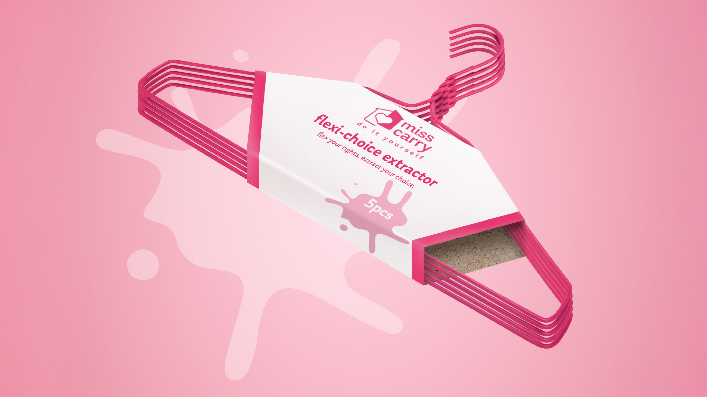

miss carry D.I.Y.
Advertising Campaign
Internship Project • 2024
Project Brief
During my internship at The Secret Little Agency (TSLA), my internmate and I were given a project called the "Mother Brief", to create a product and campaign that raises awareness and support for an issue relating to the ongoing attacks on women’s freedom . We collaborated as an art director and copywriter duo, doing everything from the ideation, execution and pitching stage to our superiors and CEOs.
Under the guidance of
Kimberly Ang & Dave Winfindale
Timeline:
• 6 weeks
Collaborators:
• Vivien Tan (Copywriter)
My Contributions:
• Responsible for executing all art
direction of project (etc. mockups & visuals)
• Aided
Ideation Process
The Problem
Every year, about 42 million women with unintended pregnancies choose abortion. And nearly half of these procedures are unsafe. In fact, an estimate of 68,000 women die of unsafe abortion, making it one of the leading causes of maternal mortality. And of the women who survive unsafe abortion, 5 million will suffer long-term health complications.
Now that the U.S. Supreme Court has overturned the constitutional
right to an abortion, safe procedures become
harder to access. In desperation,
more women are forced to take matters into their own hands.
We introduce a new home product.
One that no one can simply ignore.

miss carry d.i.y. kit
The kit that has the perfect items for an at-home-abortion.

To create MORE awareness and MORE conversation around abortion bans,
we need to find our way into conversations.
The Big gesture
We send our kit to the Supreme court to confront the dangers of banning safe abortions and urge reconsideration of their decisions. Then, we try and prove how safe our kit is by deliberately seeking FDA disapproval, highlighting that despite containing everyday household items, these are the very same items women resort to when legal and safe abortions are unavailable.

Media Spotlight
The rollout of our campaign will spark media interest, highlighting the kit as a desperate alternative to abortion, and a consequence to the overturn of Roe V Wade.

Now that we’ve fired up the U.S. to talk about miss carry, it’s time
to launch it to the
public and ensure they know we exist to
support women’s abortion rights.
Unlike abortion services, we
make our products accessible.
“Never Again” Brooch
We present a tangible symbol for supporters to proudly declare their stand for women's abortion rights.
/misscarry_enamel pin.jpg)
miss carry Target display
Own It Yourself! We partner with America’s favorite retail store, to put our products in states where abortion is banned in the U.S. The proceeds goes to fund support for abortion rights. (The NNAF, funds and supports women’s abortion access in the U.S.)

At the same time, We boost our message with eye-catching ads outside state capitols.
Billboards
Each billboard is placed outside the capitol buildings of states that have banned abortion, sending a message to legislators.